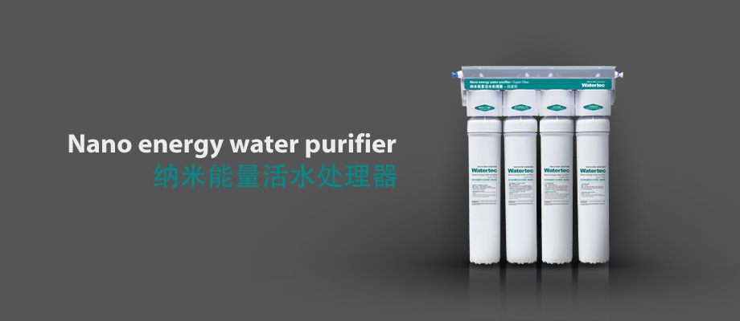
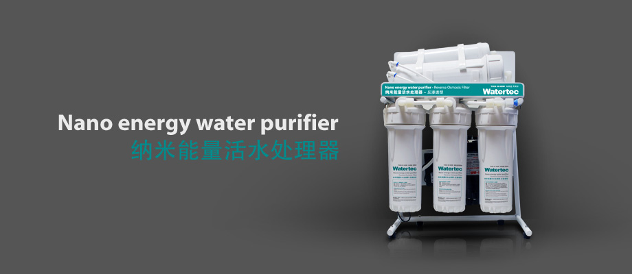
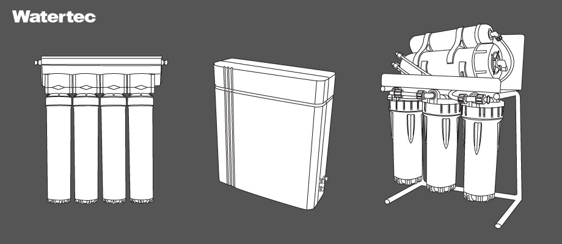
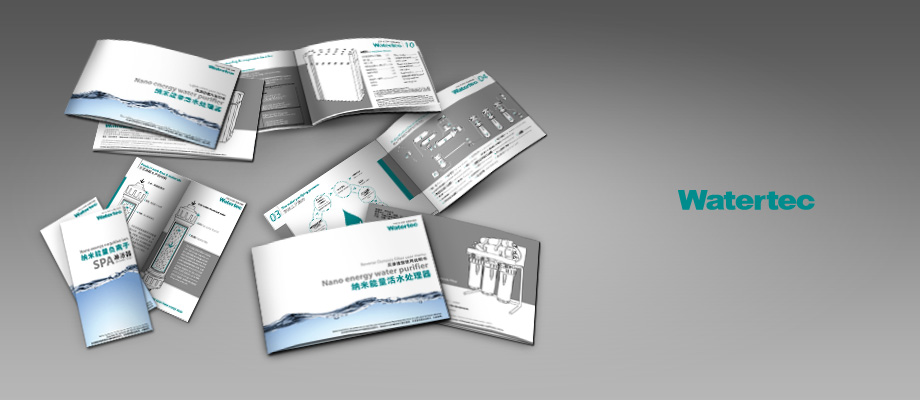
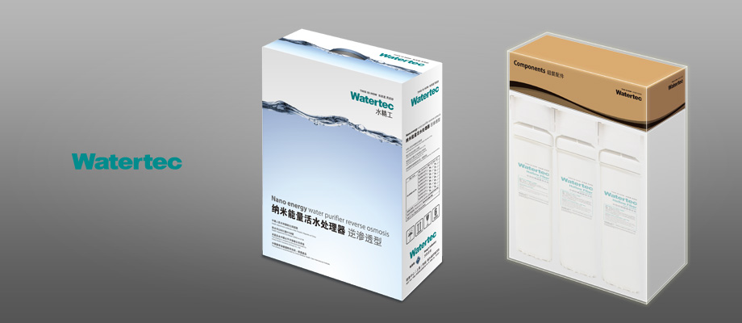

Watertec
This project is to create a brand identity and marketing strategy in order to assist a water purifier manufacturer to launch its own products to domestic and foreign markets in 2009. As the lead designer for this product, my design was aiming to make this brand to appear modern and clean, and to promote a sense of quality and technology.





Back To All Works